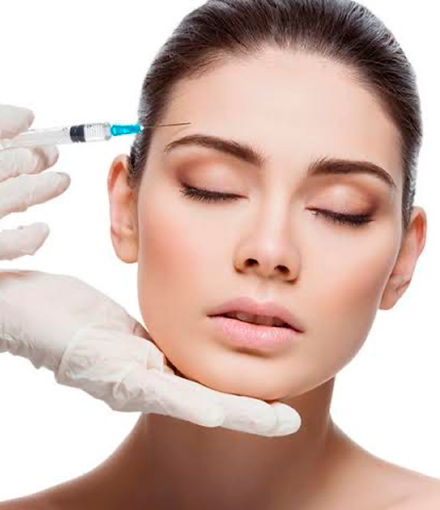

Benefícios do botox: quais são?

Hoje vamos explicar quais os principais benefícios do botox, este procedimento estético
muito utilizado por diversas pessoas, que querem melhorar algo em sua aparência e autoestima.
Falaremos também sobre como acontece o procedimento de aplicação do botox,
além de explicar se existem contraindicações para o uso dele.
Siga lendo, e assim saiba os maiores benefícios do botox.
O que é botox?
Botox é o nome popular de um item conhecido como toxina botulínica, que é utilizada principalmente em procedimentos estéticos,
trazendo nas regiões aplicadas o processo de relaxar a musculatura da região.
Ele é feito a partir da extração e purificação de uma bactéria que causa Botulismo,
porém não há necessidade para medo. O botox é muito seguro, quando aplicado da forma certa e por profissionais bem capacitados.
O que ele “trata”?
Muita gente imagina que o botox serve apenas para tratar rugas e linhas de expressão que surgem no rosto e pescoço,
retardando alguns dos efeitos da idade e do envelhecimento.
Porém ele vai além desta utilização, sendo muito útil também para:
Ajudar na redução da sudorese intensa em axilas, mãos e pés.
Diminuir os efeitos e dores causados pela cefaleia constante.
Tratar e ajudar na melhoria de paralisias faciais de causas diversas, inclusive em crianças pequenas.
Por isso o botox tem muito uso não apenas nos procedimentos estéticos, mas até mesmo em tratamentos de saúde,
melhorando a qualidade de vida de muitos pacientes.
Benefícios do botox
Seguem 5 dos benefícios do botox mais visíveis nas pessoas.
Deixa as marcas de expressão mais suaves.
Diminui os efeitos das rugas, contendo ao máximo a hiperatividade muscular do rosto.
Pode ajudar no processo de prevenção das rugas.
Pode ser aplicado em várias áreas do rosto, como olhos, sobrancelhas, lábios, nariz, dentre outros.
Traz ao rosto uma sensação constante de descanso e de musculatura relaxada.
Dentre os benefícios do botox, citamos ainda sua durabilidade, que pode ser entre 4 a 6 meses dependendo do paciente.
Como funciona a aplicação de botox
Por ser um procedimento de caráter estético, ele não precisa ser necessariamente feito em clínica hospitalar e centro cirúrgico,
mas sim em clínicas de estética, com profissionais registrados e bem capacitados (importante pesquisar isso!).
O procedimento dura ao menos 15 minutos (podendo ser maior dependendo das áreas de aplicação).
E o primeiro passo consiste na aplicação de uma pomada anestésica nas áreas que irão receber o botox.
Depois, o botox é inserido, usando uma agulha fina, colocado em pontos estratégicos das regiões que se pretende corrigir ou melhorar.
Retoques podem ser necessários depois de 15 dias da primeira aplicação.
Existem contraindicações?
Por maiores que sejam os benefícios do botox, e mesmo ele sendo recomendado para crianças que
estejam em algum tratamento de saúde (não por estética propriamente dita), existem sim contraindicações ao procedimento.
De maneira geral ele não pode ser realizado por mulheres que estejam grávidas ou amamentando.
Afinal, alguns estudos indicaram que o uso do botox pode fazer mal ao seu organismo.
Entretanto, mesmo assim, existem diversos benefícios do botox. Sendo apenas essencial que o seu uso seja feito em local adequado e com bons profissionais.
Ou seja, fundamental para se obter os resultados que se espera!